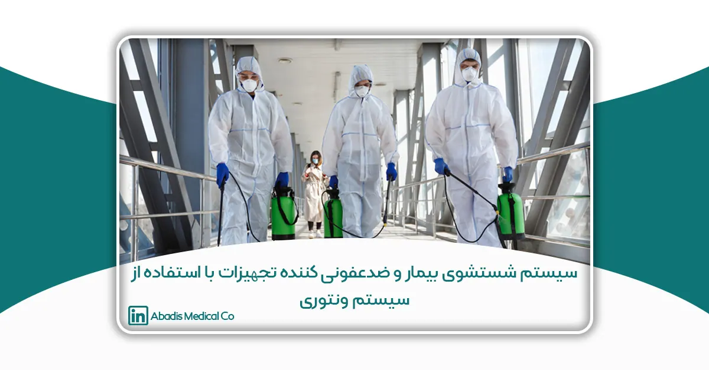
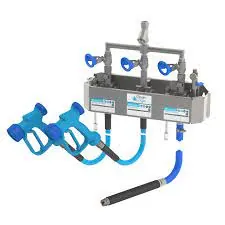

این مقاله توسط جناب آقای نامدار جانان نوشته شده؛ و برای یازدهمین کنگره کنترل عفونت ارسال شده است.
مقدمه
عفونتھای بیمارستانی یکی از مھمترین علل مرگ و میر و افزایش ھزینهھا محسوب میشوند. 25 تا 50 درصد از بیماران بستری در بخشھای مراقبتھای ویژه دچار عفونت بیمارستانی میشوند. حدود 30 درصد عفونتھای بیمارستانی را عفونت محل جراحی تشکیل میدھد. امروزه با وجود پیشرفت در اقدامات پیشگیرانه، روشھای استریلازیسیون، و داروھای پروفلاکسی، عفونت محل عمل همچنان باعث اقامت طولاتیتر، عوارض و مرگ و میر در بیماران میگردد. کشف موارد عفونت و گزارش آنھا به تیم جراحی ،قسمت مھمی از استراتژیھای بیماریابی صحیح است. یکی از عوامل مستعدکننده بیمار به عفونت محل عمل، اقامت طولانی دربیمارستان قبل از عمل و کلونازیساسیون باکتری در محیط میباشد. حمام بیمار با یک محلول آنتی سپتیک قبل از عمل در کاھش ابتلا به عفونت بیتاثیر نمیباشد.

بیان مسئله
بی گمان یکی از مھمترین حلقهھای سلامت، بھداشت محیط است و علاوه بر نقش پیش درآمدی و پیشگیرانه، جایگاه مھمی درامر درمان دارد. گاھی با وجود حداکثر تلاش درمانی، بهدلیل عوارض عدم رعایت بھداشت، کل فرایند درمان ناکام میماند. به نظر میرسد این رکن مھم بیمارستانی، به قدر کفایت مورد اھتمام قرار نگرفته است و شیوع مقاومتھای دارویی و عفونتھای بیمارستانی و افزایش دورهھای بستری و بالا رفتن ھزینه سلامت در جامعه، از نتایج آن است.
محیط بیمارستان نقش مھمی در ایجاد و گسترش عفونتھای بیمارستانی بازی میکند. بنابراین به منظور کاھش انتقال عوامل بیماریزا از وسایل به محیط اطراف، روشھای کارآمد نظافت و ضدعفونی مورد نیاز است. شستشو با آب و مواد پاک کننده رایجترین روش برای انجام این کار است. 90 درصد میکروارگانیسم ھا در جرمھای قابل مشاھده وجود دارند. ھدف از نظافت روزانه حذف یا کاھش این جرمھا میباشد. باید توجه داشت در صورت عدم استفاده از جرم زدایی مکانیکی، دترجنتھا و مواد ضدعفونی کننده، نمیتوانند فعالیت ضد میکروبی خود را بهدرستی اعمال کنند.
نظافت مرطوب در بیمارستانھا با فواصل زمانی مشخص جھت برطرف نمودن رسوبات و رنگھا و آلودگیھای از این قبیل، مورداستفاده قرار می گیرد. سرویسھای بھداشتی و حمام ھا و سایر مناطق مرطوب مشابه حداقل روزانه یکبار نیاز به نظافت دارند.
فواصل زمانی این نظافت در بخشھا بر اساس صلاحدید مسئول بخش تعیین می گردد. ذکر این نکته ضروری است که وسایل تمیز کننده پس از استفاده در اتاق بیماران عفونی و یا اتاقھای ایزوله و یا احتمالا” قبل از استفاده در اتاق بیمارانی که نقص سیستم ایمنی دارند بایستی طبق استاندارد مربوطه ضدعفونی شوند. عموما در بیمارستانھا جھت آماده سازی محلول ضدعفونی نیاز به رقیق کردن درصد مشخصی از آن مطابق استانداردھای اعلام شده می باشد، که احتمال خطای انسانی وجود دارد. دستگاه مولتی کلین با استفاده از تکنولوژی خاص این نیاز را برطرف کرده و تحولی در سیستم شستشوی مراکز درمانی ایجاد کرده است.
شرح دستگاه مولتی کلین
دستگاه مولتی کلین یک پنل چندمنظوره جھت سھولت شستشوی بیماران و ضدعفونی کردن وسایل و تجھیزات در بخشھای بستری ومراقبتھای ویژه و اتاقھای ایزوله بیمارستانی، بخشھای کنترل عفونت، آسایشگاه سالمندان و جانبازان و معلولین، مراکز سوختگی طراحی شده است. این دستگاه بدلیل استفاده از طراحی خاص، موفق به دریافت گواھی نامه ثبت اختراع شده است. ( شماره ثبت اختراع : 108781) دستگاه مولتی کلین قادر است با استفاده از قوانین فیزیک درصد مشخصی از محلول ضدعفونی که توسط کاربراز طریق روتامتر تعیین میگردد، با آب رقیق کرده و در نھایت محلول با غلظت مورد نظر با سیستم پاششی قابل تنظیم در دسترس کاربر قرار میگیرد. بدین ترتیب بدون اتلاف وقت و ھدر رفت احتمالی محلول و یا خطا در تعیین میزان غلظت آن، محلول نھایی بدست میآید . از این محلول میتوان جھت شستشوی بیماران قبل از جراحی، بعد از ھر بار استحمام جھت کنترل عفونت وجلوگیری از انتشار آلودگی محیط حمام و سرویس بھداشتی استفاده کرد ھمچنین کلیه ابزار و تجھیزاتی که نیاز به ضدعفونی روزانه دارند، بهراحتی و با صرف ھزینه و وقت کمتر با استفاده از این دستگاه شستشو و ضدعفونی میگردند. این دستگاه حتی درمحیطھای مرطوب بدون نیاز به برق و باتری با استفاده از سیستم ونچوری و ایجاد فشار منفی، محلول با درصد موردنیاز کاربر تھیه میکند. عدم وابستگی به محلول خاص از ویژگیھای این دستگاه میباشد.
ویژگی های دستگاه:
- قابل استفاده در بخشھای بستری و مراقبتھای ویژه و ایزوله و اتاقھای کثیف مراکز درمانی
- تسھیل در شستشوی بیمار بخصوص در بخشھای ایزوله و مراقبتھای ویژه
- ضدعفونی بیمار، محیط حمام و سرویس بھداشتی پس از ھر بار استفاده
- ضدعفونی کردن وسایل و تجھیزات بیمارستانی اعم از ویلچیر، تخت، برانکارد، ترالی، تشک مواج و …
- کاھش زمان بستری با کنترل عفونت
- کاھش ساعات کاری پرسنل بخش
- افزایش سرعت عمل در ضدعفونی کردن وسایل و تجھیزات بیمارستان
- کاھش خطای انسانی در رقیق کردن محلول
- کاھش خطای انسانی نسبت به ضدعفونی با اسپری و حصول اطمینان از ضدعفونی شدن کامل تجھیزات
- عدم وابستگی به محلول خاص
مشخصات فنی دستگاه:
- پنل قابل نصب روی دیوار حتی در مکانھای مرطوب (جنس بدنه استیل یاPVC )
- ترمومتر دیجیتال جھت نشان دادن دمای آب خروجی (22-42 درجه سانتیگراد)
- دارای روتامتر و فلومتر جھت تعیین غلظت محلول
- سردوشی مجزای شستشوی بیمار با قابلیت تنظیم میزان خروجی آب
- سردوشی مجزای محلول ضدعفونی تجھیزات با قابلیت تنظیم میزان خروجی آن
- شیلنگ مجزای خروجی آب گرم (5.1 متر)
- شیلنگ مجزای خروجی محلول (5.1 متر)
- محفظه نگھداری ماده ضدعفونی کننده
- بدون نیاز به برق و باتری
- وزن دستگاه 5 کیلوگرم
- ابعاد دستگاه 40*30*10
جمع بندی
دستگاه مولتی کلین با طراحی خاص و بدون نیاز به برق و باتری و قابل مقایسه با مدلھای خارجی و با قیمتی مناسب، تحولی درسیستم شستشوی بیماران و تجھیزات در محیط بیمارستان میباشد. این دستگاه چندمنظوره جھت شستشو و ضدعفونی سریع، آسان و مطمئن بیمار بهخصوص در بخشھای عفونی و مراقبتھای ویژه و محیط و تجھیزات بیمارستان مورد استفاده میباشد. سرعت عمل در ضدعفونی مطمئن و استاندارد و کاھش ساعت کاری پرسنل مربوطه و تسھیل در شستشوی تجھیزات از اھم ویژگیھای این دستگاه میباشد. مولتی کلین با جلوگیری از ھدررفت محلول و مھیا کردن آن با غلظت مناسب، میتواند ھمواره محلول آماده را در اختیار ھمهی بخشھای بیمارستان قرار دھد.
مراجع
- راھنمای کشوری نظام مراقبت عفونتھای بیمارستانی، وزارت بھداشت،درمان و آموزش پزشکی ،مرکز مدیریت بیماریھا 1385
- دستورالعمل مربوط به نظافت مرطوب بیمارستان، سایت بھداشت محیط ایران
- کتابچه راھنمای بھداشت محیط بیمارستان،بازنگری 1402، بیمارستان امام سجاد آشتیان
- کتاب مدیریت بھداشت در بیمارستان ، مرکز تحقیقات علوم و اعصاب شفا و بیمارستان تخصصی و فوق تخصصی خاتم الانبیا1392